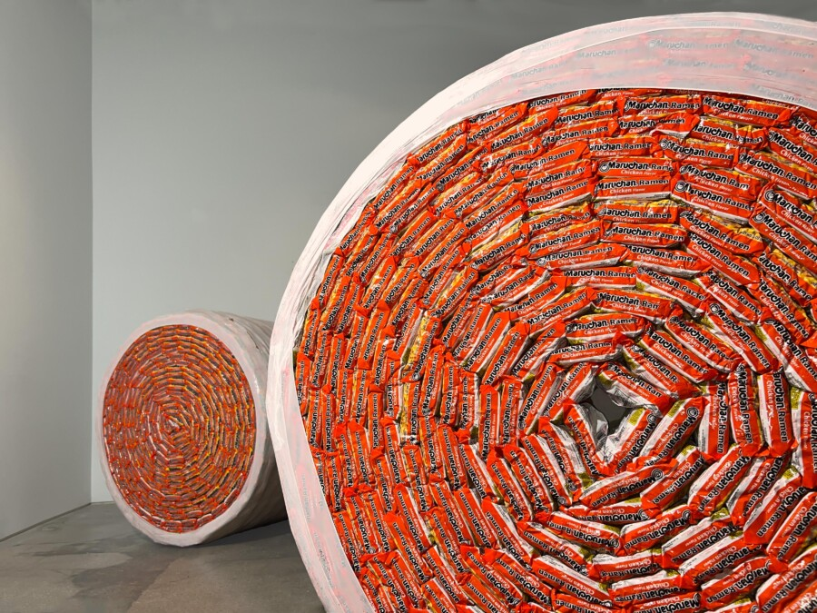

Titus Wonsey: WADING
Wading examines the tension among lore, myth and material truth — how we move through murky systems of power, bumping up against the trappings down below, and sifting through the evidence on the surface that tells us where we are. Wonsey recontextualizes home objects and familiar forms; to confront them as material evidence of an ongoing negotiation with structures that shape movement, value and visibility.